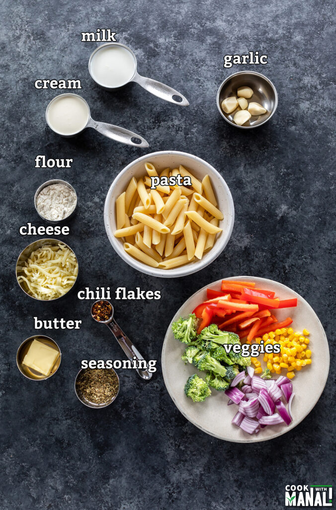

|

|
- Pasta: I like using penne pasta probably because that’s how I always had it in India but you can definitely use other pasta shapes. Macaroni and Rigatoni will also work well. I personally don’t like using spaghetti.
- Veggies:You can use any veggies that you like in this pasta, the day I made this pasta, I had peppers and broccoli at home and that’s what I used in the recipe along with onion and sweet corn. I also use tons of garlic because garlic just goes so well in this pasta.
- Milk: I like using whole milk but 2% would also work. Adding cream makes it richer.
- Seasonings: I have added dried Italian seasoning and dried oregano, you can use herbs like basil and thyme as well. Add more or less of the seasoning and adjust to taste.
|